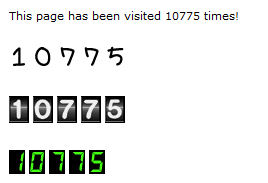

PHP Hit Counter
This extension provides an easy way to add a simple hit counter to web pages. This solution uses PHP to update a counter value in a file on the server. Each page needs its own data file.
This extension provides an easy way to add a simple hit counter to web pages. This solution uses PHP to update a counter value in a file on the server. Each page needs its own data file.
Download (Last update: April 10, 2013)
PHP Hit Counter Extension
PHP Hit Counter Extension

Tip
If you want more options (mysql, ignore search bots, more styles, count unique visitors etc) then also check out these related extensions:
• Visit Counter
• Site Statistics (with charts)
If you want more options (mysql, ignore search bots, more styles, count unique visitors etc) then also check out these related extensions:
• Visit Counter
• Site Statistics (with charts)